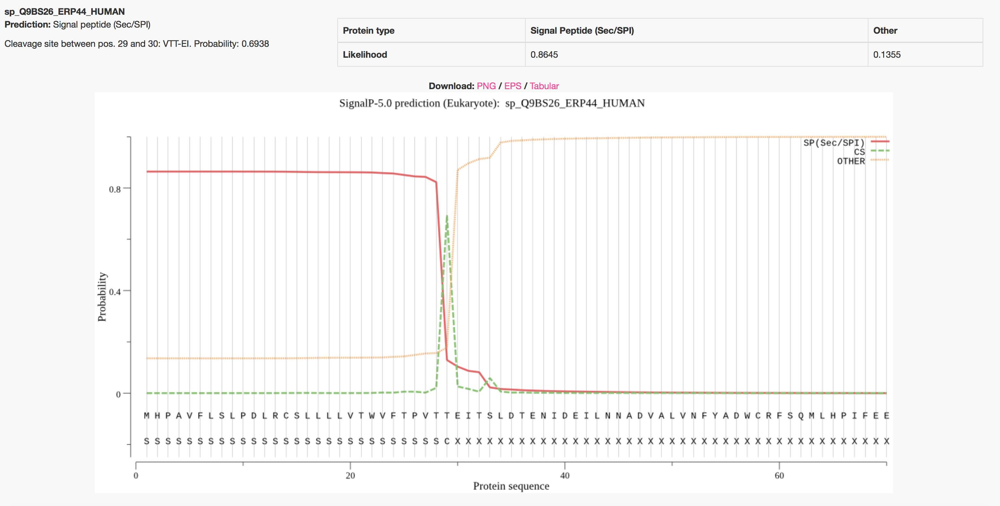
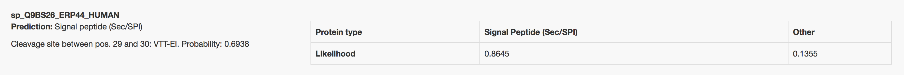

SignalP-5.0
Summary of 7 predicted sequences from Eukarya
Predictions list. Use the help page for more detailed description of the output page.
Predicted proteins
Prediction: Other
| Protein type | Signal Peptide (Sec/SPI) | Other |
|---|---|---|
| Likelihood | 0.003 | 0.997 |

Prediction: Other
| Protein type | Signal Peptide (Sec/SPI) | Other |
|---|---|---|
| Likelihood | 0.0034 | 0.9966 |

Prediction: Signal peptide (Sec/SPI)
Cleavage site between pos. 21 and 22: GSA-RY. Probability: 0.6442
| Protein type | Signal Peptide (Sec/SPI) | Other |
|---|---|---|
| Likelihood | 0.9775 | 0.0225 |

Prediction: Signal peptide (Sec/SPI)
Cleavage site between pos. 19 and 20: VRA-NY. Probability: 0.8791
| Protein type | Signal Peptide (Sec/SPI) | Other |
|---|---|---|
| Likelihood | 0.9952 | 0.0048 |

Prediction: Signal peptide (Sec/SPI)
Cleavage site between pos. 19 and 20: VKG-QK. Probability: 0.9322
| Protein type | Signal Peptide (Sec/SPI) | Other |
|---|---|---|
| Likelihood | 0.985 | 0.015 |

Prediction: Other
| Protein type | Signal Peptide (Sec/SPI) | Other |
|---|---|---|
| Likelihood | 0.4696 | 0.5304 |


Instructions
1. Specify the input sequences
All the input sequences must be in one-letter amino acid code. The allowed alphabet (not case sensitive) is as follows:
All the alphabetic symbols not in the allowed alphabet will be converted to X before processing. All the non-alphabetic symbols, including white space and digits, will be ignored.
The sequences can be input in the following two ways:
-
Paste a single sequence (just the amino acids) or a number of sequences in
FASTA
format into the upper window of the main server page.
- Select a FASTA file on your local disk, either by typing the file name into the lower window or by browsing the disk.
Both ways can be employed at the same time: all the specified sequences will
be processed. However, there may be not more than 5,000 sequences in one submission. The sequences
may not be longer than 10,000 amino acids.
2. Customize your run
- Organism group:
It is important for performance that you choose the correct organism group — Archaea, Eukaryotes, Gram-negative bacteria or Gram-positive bacteria — since the signal peptides of these three groups are known to differ from each other.
Gram-positive bacteria correspond to Actinobacteria and Firmicutes in the NCBI Taxonomy.
Gram-negative bacteria are all other eubacteria, except Tenericutes (including Mycoplasma), which seem to lack a type I signal peptidase and therefore do not have standard signal peptides.
- Output format:
You can choose between four output formats:- Standard
- Appropriate for most users. Shows one plot and one summary per sequence.
- Short
- Convenient if you submit lots of sequences. Shows only one line of output per sequence and no graphics.
3. Submit the job
Click on the "Submit" button. The status of your job (either 'queued' or 'running') will be displayed and constantly updated until it terminates and the server output appears in the browser window.At any time during the wait you may enter your e-mail address and simply leave the window. Your job will continue; you will be notified by e-mail when it has terminated. The e-mail message will contain the URL under which the results are stored; they will remain on the server for 24 hours for you to collect them.
Example Outputs
By default the server produces the following output for each input sequence. The example below shows the output for thioredoxin domain containing protein 4 precursor (endoplasmic reticulum protein ERp44), taken from the Uniprot entry ERP44_HUMAN. The signal peptide prediction is consistent with the database annotation.One annotation is attributed to each protein, the one that has the highest probability. The protein can have a Sec signal peptide (Sec/SPI), a Lipoprotein signal peptide (Sec/SPII), a Tat signal peptide (Tat/SPI) or No signal peptide at all (Other).
If a signal peptide is predicted, the cleavage site position is reported as well.
On the plot, three likelihood probabilities are reported on the plot, i.e. SP(Sec/SPI) / LIPO(Sec/SPII) / TAT(Tat/SPI) (depending on what type of signal peptide is predicted), CS (the cleavage site) and OTHER (the probability that the sequence does not have any kind of signal peptide).
Example: secretory protein - standard output format

Example: secretory protein - short output format

From the Downloads tab, the user can obtain the results of the run in various formats, i.e. JSON, Prediction summary (results for each submission, 1 line per sequence), Processed entries fasta (a FASTA sequence file containing the sequences of protein that had predicted signal peptides, with the signal peptide removed) and Processed entries gff3 (a file showing the signal peptides feature of those proteins that had predicted signal peptides in GFF3 format).